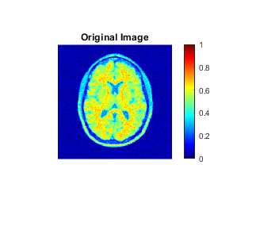
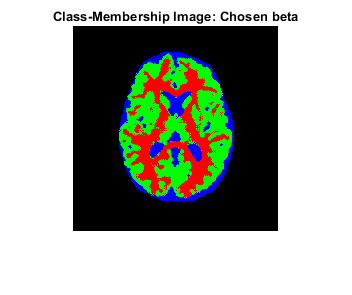
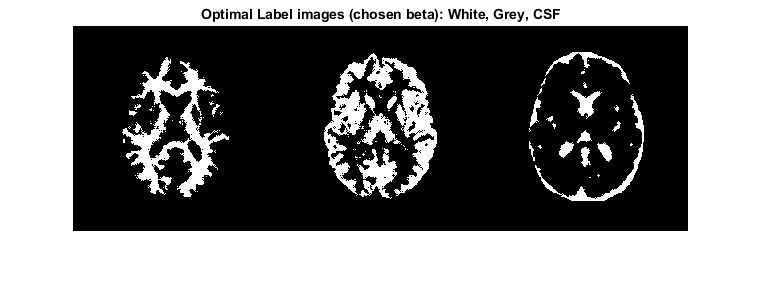
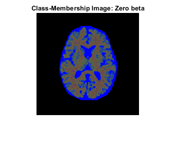
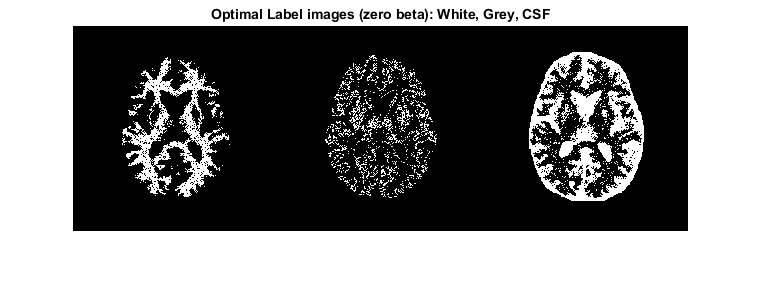

Contents
load('../data/assignmentSegmentBrainGmmEmMrf.mat');
Y = imageData;
mask = imageMask;
K = 3;
Initialization for chosen beta
beta = 10;
X = zeros(256,256);
for i=1:256
for j=1:256
if (mask(i,j)==0)
continue
end
if(Y(i,j)<0.4)
X(i,j)=3;
elseif(Y(i,j)>0.6)
X(i,j)=1;
else
X(i,j)=2;
end
end
end
vari = [1,1,1];
mu = [0.64,0.52,0.29];
Iterations for chosen beta
for i= 1:30
comb = Member(Y, X, mask, K, mu, vari, beta);
mem = comb.a;
X = comb.b;
post = ['log Posterior update ',num2str(comb.c),' ==> ',num2str(comb.d)];
disp(post)
comb= Gauss_update(Y, mem, mask, K);
mu = comb.a;
vari = comb.b;
end
mean_display = ['means ',num2str(mu)];
disp(mean_display);
log Posterior update -41848.8605 ==> -2244.3582
log Posterior update -27851.2691 ==> -9936.5188
log Posterior update -33142.4677 ==> -11789.5665
log Posterior update -26388.0347 ==> -11846.6627
log Posterior update -30801.4868 ==> -11856.2165
log Posterior update -26139.462 ==> -11852.7174
log Posterior update -30440.5715 ==> -11859.1411
log Posterior update -25788.6794 ==> -11804.2665
log Posterior update -30080.878 ==> -11804.7042
log Posterior update -25595.7144 ==> -11785.8414
log Posterior update -29972.0006 ==> -11789.1326
log Posterior update -25521.9957 ==> -11772.959
log Posterior update -29809.7217 ==> -11780.6242
log Posterior update -25530.4669 ==> -11772.0726
log Posterior update -29846.5202 ==> -11784.3535
log Posterior update -25627.7818 ==> -11772.0543
log Posterior update -29843.936 ==> -11784.4857
log Posterior update -25627.9244 ==> -11772.1497
log Posterior update -29843.949 ==> -11784.5066
log Posterior update -25627.9301 ==> -11772.1536
log Posterior update -29843.9495 ==> -11784.5074
log Posterior update -25627.9303 ==> -11772.1538
log Posterior update -29843.9495 ==> -11784.5074
log Posterior update -25627.9303 ==> -11772.1538
log Posterior update -29843.9495 ==> -11784.5074
log Posterior update -25627.9303 ==> -11772.1538
log Posterior update -29843.9495 ==> -11784.5074
log Posterior update -25627.9303 ==> -11772.1538
log Posterior update -29843.9495 ==> -11784.5074
log Posterior update -25627.9303 ==> -11772.1538
means 0.63722 0.52686 0.29551
Saving images for chosen beta
white_b = zeros(256,256);
grey_b = zeros(256,256);
csf_b = zeros(256,256);
for i=1:256
for j=1:256
if (mask(i,j)==0)
continue
end
if(X(i,j)==1)
white_b(i,j)=1;
grey_b(i,j) = 0;
csf_b(i,j) = 0;
elseif(X(i,j)==2)
white_b(i,j)=0;
grey_b(i,j) = 1;
csf_b(i,j) = 0;
else
white_b(i,j)=0;
grey_b(i,j) = 0;
csf_b(i,j) = 1;
end
end
end
joint_labels_b = [white_b,grey_b,csf_b];
figure; imshow(imageData); title('Original Image');colormap('jet');colorbar;
figure; imshow(mem); title('Class-Membership Image: Chosen beta');
figure; imshow(joint_labels_b); title('Optimal Label images (chosen beta): White, Grey, CSF');
hold off;
cd ../;
save('results/original_image.mat',"imageData");
save('results/Memberships_beta.mat',"mem");
save('results/label_beta.mat',"X");
cd code;
  
Initialization for beta = 0 (No MRF)
beta = 0;
X = zeros(256,256);
for i=1:256
for j=1:256
if (mask(i,j)==0)
continue
end
if(Y(i,j)<0.4)
X(i,j)=3;
elseif(Y(i,j)>0.6)
X(i,j)=1;
else
X(i,j)=2;
end
end
end
vari = [1,1,1];
mu = [0.638,0.524,0.290];
Iterations for beta = 0
for i= 1:30
comb = Member(Y, X, mask, K, mu, vari, beta);
mem = comb.a;
X = comb.b;
post = ['log Posterior update ',num2str(comb.c),' ==> ',num2str(comb.d)];
disp(post)
comb= Gauss_update(Y, mem, mask, K);
mu = comb.a;
vari = comb.b;
end
log Posterior update -23408.3312 ==> -23406.7762
log Posterior update -33596.392 ==> -33533.1302
log Posterior update -33178.5308 ==> -33170.843
log Posterior update -32485.6583 ==> -32482.1836
log Posterior update -31466.6417 ==> -31463.4569
log Posterior update -30422.047 ==> -30408.9475
log Posterior update -29836.2211 ==> -29810.5447
log Posterior update -29831.7381 ==> -29794.8099
log Posterior update -30143.3151 ==> -30082.1689
log Posterior update -30378.3188 ==> -30310.318
log Posterior update -30423.6472 ==> -30382.3408
log Posterior update -30409.0449 ==> -30398.7491
log Posterior update -30398.6484 ==> -30394.5091
log Posterior update -30384.5159 ==> -30382.8032
log Posterior update -30369.3026 ==> -30368.2898
log Posterior update -30353.037 ==> -30352.6017
log Posterior update -30336.3856 ==> -30336.1922
log Posterior update -30319.1848 ==> -30319.0917
log Posterior update -30301.3716 ==> -30301.3247
log Posterior update -30282.9267 ==> -30282.8979
log Posterior update -30263.8062 ==> -30263.7696
log Posterior update -30243.9538 ==> -30243.9153
log Posterior update -30223.362 ==> -30223.3319
log Posterior update -30202.0585 ==> -30202.0227
log Posterior update -30180.0067 ==> -30179.9669
log Posterior update -30157.187 ==> -30157.146
log Posterior update -30133.5962 ==> -30133.5654
log Posterior update -30109.2724 ==> -30109.2167
log Posterior update -30084.1263 ==> -30084.0847
log Posterior update -30058.1865 ==> -30058.1373
Saving images for beta = 0
white_0 = zeros(256,256);
grey_0 = zeros(256,256);
csf_0 = zeros(256,256);
for i=1:256
for j=1:256
if (mask(i,j)==0)
continue
end
if(X(i,j)==1)
white_0(i,j)=1;
grey_0(i,j) = 0;
csf_0(i,j) = 0;
elseif(X(i,j)==2)
white_0(i,j)=0;
grey_0(i,j) = 1;
csf_0(i,j) = 0;
else
white_0(i,j)=0;
grey_0(i,j) = 0;
csf_0(i,j) = 1;
end
end
end
joint_labels_0 = [white_0,grey_0,csf_0];
figure; imshow(imageData); title('Original Image');colormap('jet');colorbar;
figure; imshow(mem); title('Class-Membership Image: Zero beta');
figure; imshow(joint_labels_0); title('Optimal Label images (zero beta): White, Grey, CSF');
cd ../;
save('results/Memberships_zero.mat',"mem");
save('results/label_zero.mat',"X");
cd code;
 